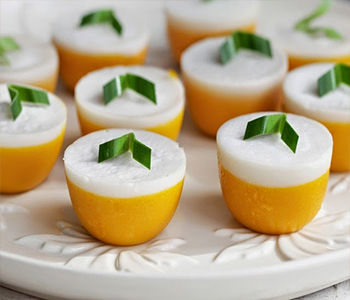

Bahan Lapisan Kuning:
- 200 gram labu kuning kukis haluskan
- 100 gram tepung sagu
- 3 sdm tepung beras
- 160 ml santan(santan kara + air)
- 100 gram gula pasir
- sejumput garam
- vanili cair
Bahan Lapisan Putih:
- 200 ml santan (santan kara + air)
- 3 sdm tepung beras
- 25 gram tepung sagu
- 1 sdm gulapasir
- sejumput garam
- vanili cair
Cara Membuat:
- Lapisan kuning : masak santan garam hingga mendidih lalu dinginkan.
- Campur labu kuning yg sdh di kukus dan haluskan tepung sagu, tepung beras, gulapasir, dan vanili cair lalu masukan santan aduk rata sampe halus lalu saring bila perlu tapi klu aku ga di saring suka biar ada tekstur labunya
- Lapisan putih campur semua bahan putih jadi satu aduk sampe halus.
- Panaskan kukusan olesi cetakan dgn dgn minyak.
- Tuang adonan kuning lalu kukus selama -+ 15 menitan lalu tuang lagi adonan putih kukus lagi selama 15 menitan.
- Keluarkan kue dari cetakan dan siap di nikmati.